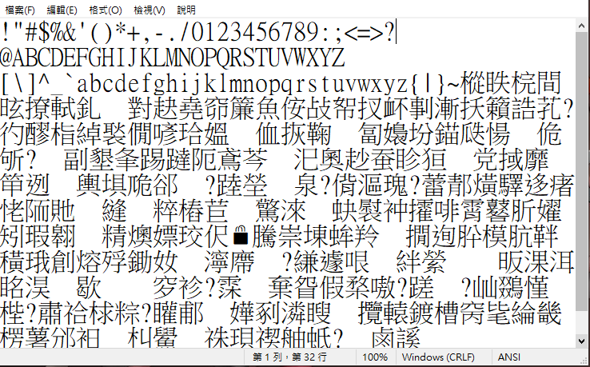
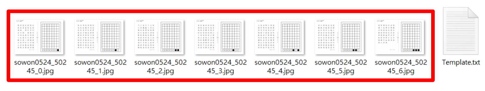

操作說明
帳號註冊
 在登入介面點擊註冊選項進行註冊
在登入介面點擊註冊選項進行註冊
下載稿紙內容

開啟後如果中文部分是亂碼是正常的
建立模板
模板下載->添加自訂義
隨意輸入名稱->上傳.txt文字檔->確定
因為會發放稿紙所以接下來綠色部分可略過
下載並影印模板
找到剛才建立的模板並下載

解壓縮後, 將檔案影印出來; 若有觸控筆及平板或電繪板可不用影印(此次作業只接受實體紙本)
書寫稿紙
對應左側文字書寫在右側格子中 （下方黑白方塊表示頁碼）
※書寫注意事項：
使用黑色或深色原子筆書寫，勿使用簽字筆、鉛筆。
文字盡量居中、大小一致，不要壓到或超過邊框。
使用黑色或深色原子筆書寫，勿使用簽字筆、鉛筆。
文字盡量居中、大小一致，不要壓到或超過邊框。
掃描拍照
1. 用拍照或是掃描稿紙右半邊的書寫部分 (包含下方的黑白方塊)2. 用電繪板或平板的電子檔則要擷取右半邊 (包含下方的黑白方塊)
3. 將所有檔案放到同一資料夾中, 並包裝成 .zip 壓縮檔
※拍照掃描注意事項：
保持紙張平整。
如果照片模糊請重新拍照（字體品質會受影響）。
必須將書寫區外的黑色邊框和頁碼完整拍入照片中。
保持紙張平整。
如果照片模糊請重新拍照（字體品質會受影響）。
必須將書寫區外的黑色邊框和頁碼完整拍入照片中。
建立字體
在我的字體選擇添加字體
隨意命名後選擇自己建立的模板並上傳剛才準備的壓縮檔, 之後按確定, 並等待他製作完成
(可能會花上數小時) 若上傳時總是卡住, 可調整以下選項:
(1)骨架指導：是➜否
(2)擬合精度：中➜低 在你的字體顯示完成後, 可按下下載
打開下載的 .ttf檔並安裝即可使用